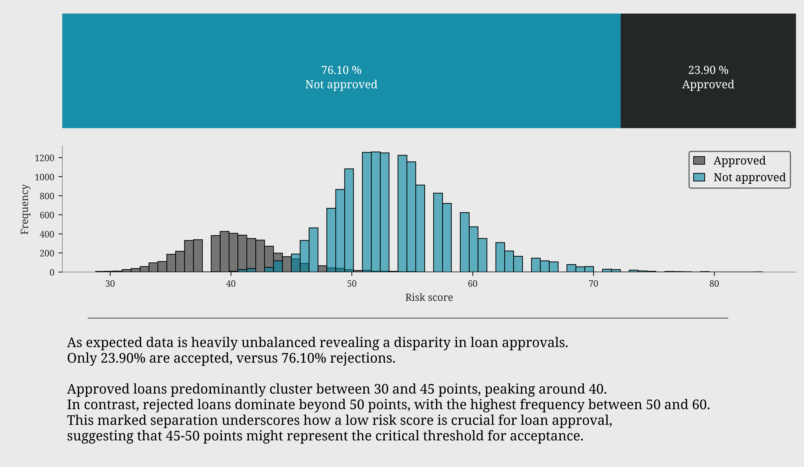
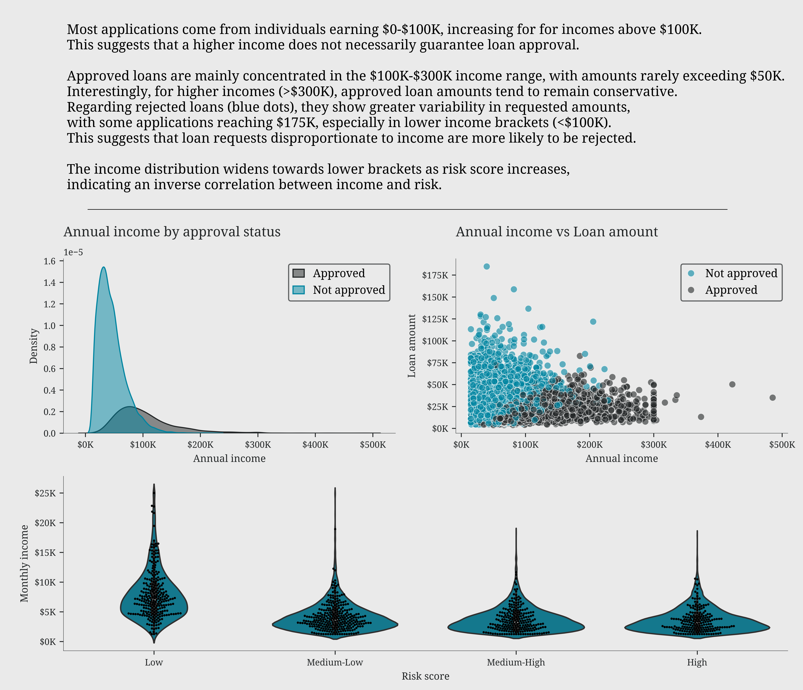
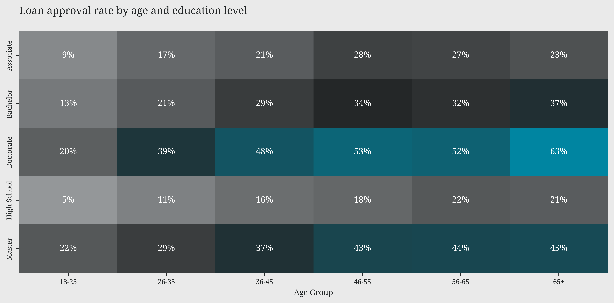
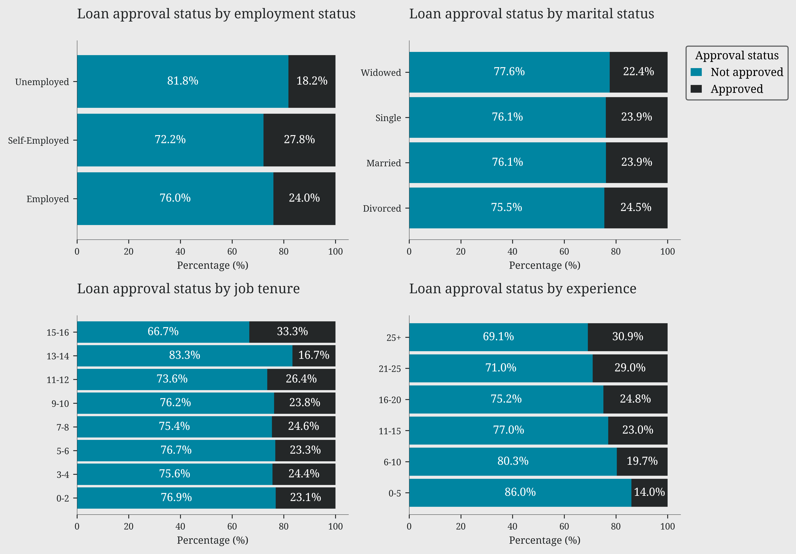
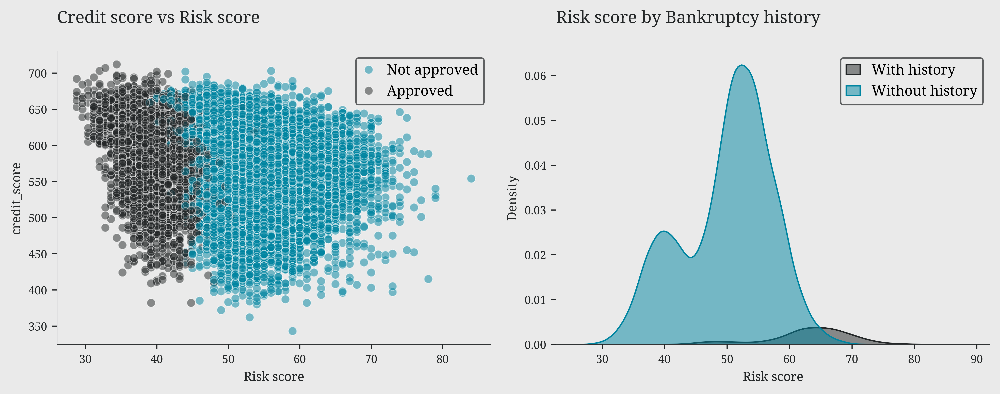

%%{init: {'theme': 'default', 'themeVariables': { 'fontFamily': 'Arial, sans-serif', 'fontSize': '20px', 'primaryColor': '#0085a1', 'primaryTextColor': 'black' }}}%%
graph TD
A((Loan<br>Approval)) --- B((Income<br> ))
A --- C((Who<br>gets<br>loans?))
A --- E((Credit<br>History))
A --- F((Wealth))
classDef main fill:#0085a1
classDef factor fill:#0085a1
class A main
class B,C,D,E,F factor
How to get your loan
python
eda
A data-driven journey through the factors that make or break loan applications
Motivation and analysis design
This analysis is intended to serve as an exercise in data visualisation and exploratory data analysis (EDA) techniques. The dataset comprises 20.000 synthetic records of personal and financial information. These records include various features such as demographic information, credit history, employment status, income levels, existing debt, and other relevant financial metrics. This provides a comprehensive basis for sophisticated, data-driven analysis and decision-making. The objective of this exercise is to analyse the dataset in order to identify patterns, relationships, and the factors influencing loan decisions.
While the insights gained may be useful, it should be noted that the data is synthetic, and the primary focus is on demonstrating various visualisation methods and developing those used in the datasage python package.
Loan approval landscape
Code
fig, (ax1, ax2) = plt.subplots(2, 1, figsize=(10, 4))
# binary ratio plot
leo.binary_ratio_plot(data=df, column_name='loan_approved', target_zero_name="Not approved", target_one_name="Approved", ax=ax1)
# let's see distribution of risk score by approval status
sns.histplot(data=df, x='risk_score', hue='loan_approved', multiple="layer", alpha=0.6, ax=ax2)
ax2.set_xlabel('Risk score')
ax2.set_ylabel('Frequency')
ax2.legend(labels=['Approved', 'Not approved'],loc='upper right')
leo.insights_box(fig,
fontsize=12,
position='bottom',
x=0,
y=-0.02,
text=
"""
As expected data is heavily unbalanced revealing a disparity in loan approvals.
Only 23.90% are accepted, versus 76.10% rejections.
Approved loans predominantly cluster between 30 and 45 points, peaking around 40.
In contrast, rejected loans dominate beyond 50 points, with the highest frequency between 50 and 60.
This marked separation underscores how a low risk score is crucial for loan approval,
suggesting that 45-50 points might represent the critical threshold for acceptance.
""")
plt.tight_layout()
plt.show()
Income: first line of defense
Code
fig, (ax1, ax2, ax3) = leo.create_layout( [(0,0,1,1), (0,1,1,1), (1,0,1,2)], figsize=(10,6))
# let's see the annual income of who get the loan approved
sns.kdeplot(data=df, x='annual_income', hue='loan_approved', fill=True, alpha=0.5, ax=ax1, legend=False)
ax1.set_title('Annual income by approval status')
ax1.set_xlabel('Annual income')
ax1.xaxis.set_major_formatter(plt.FuncFormatter(lambda x, p: f'${x/1000:,.0f}K'))
ax1.legend(labels=['Approved', 'Not approved'], loc='upper right')
# how the income affect the loan amount requested?
sns.scatterplot(data=df, x='annual_income', y='loan_amount', hue='loan_approved',sizes=(20, 200), alpha=0.6, ax=ax2)
ax2.set_title('Annual income vs Loan amount')
ax2.set_xlabel('Annual income')
ax2.set_ylabel('Loan amount')
ax2.yaxis.set_major_formatter(plt.FuncFormatter(lambda x, p: f'${x/1000:,.0f}K'))
ax2.xaxis.set_major_formatter(plt.FuncFormatter(lambda x, p: f'${x/1000:,.0f}K'))
handles, _ = ax2.get_legend_handles_labels()
ax2.legend(handles=handles, labels=['Not approved', 'Approved'], loc='upper right')
# how monthly income change with different risk score levels
sns.violinplot(data=df, x='risk_level', y='monthly_income', ax=ax3, legend=False)
sns.swarmplot(data=df.head(1000), x='risk_level', y='monthly_income', color='black', size=2, ax=ax3, legend=False)
ax3.set_ylabel('Monthly income')
ax3.set_xlabel('Risk score')
ax3.yaxis.set_major_formatter(plt.FuncFormatter(lambda x, p: f'${x/1000:,.0f}K'))
leo.insights_box(fig,
fontsize=12,
position='top',
x=0,
y=1.43,
text=
"""
Most applications come from individuals earning $0-\$100K, increasing for for incomes above \$100K.
This suggests that a higher income does not necessarily guarantee loan approval.
Approved loans are mainly concentrated in the $100K-\$300K income range, with amounts rarely exceeding \$50K.
Interestingly, for higher incomes (>\$300K), approved loan amounts tend to remain conservative.
Regarding rejected loans (blue dots), they show greater variability in requested amounts,
with some applications reaching \$175K, especially in lower income brackets (<\$100K).
This suggests that loan requests disproportionate to income are more likely to be rejected.
The income distribution widens towards lower brackets as risk score increases,
indicating an inverse correlation between income and risk.
""")
plt.tight_layout()
plt.show()
Who gets loans?
The analysis of demographic variables reveals a clear hierarchy of factors influencing loan approval. Education emerges as the most decisive factor, with a significant gap between approval rates for higher degrees (PhD 48-63%) and lower ones (High School 16-22%). This pattern is further reinforced by age: approval rates consistently increase with age across all education levels, suggesting that life experience and financial stability are highly valued. Professional stability also plays a key role, with self-employed and employed individuals enjoying significantly higher approval rates than the unemployed. Surprisingly, marital status has a marginal impact, suggesting a more equitable approach based on individual merit rather than social factors.
Code
approval_matrix = pd.pivot_table(df, values='loan_approved',index='education_level',columns='age_bins',aggfunc='mean')
plt.figure(figsize=(10, 5))
sns.heatmap(approval_matrix, annot=True, fmt='.0%',cmap=ccmap,cbar=False)
plt.title('Loan approval rate by age and education level')
plt.xlabel('Age Group')
plt.ylabel('')
plt.tight_layout()
plt.show()
fig, ((ax1,ax2),(ax3,ax4)) = plt.subplots(2, 2, figsize=(10, 7))
leo.stacked_bars_plot(data=df, x='employment_status', y='loan_approved', ax=ax1)
ax1.set_title('Loan approval status by employment status')
leo.stacked_bars_plot(data=df, x='marital_status', y='loan_approved', ax=ax2)
ax2.set_title('Loan approval status by marital status')
leo.stacked_bars_plot(data=df, x='job_tenure_bins', y='loan_approved', ax=ax3)
ax3.set_title('Loan approval status by job tenure')
leo.stacked_bars_plot(data=df, x='experience_bins', y='loan_approved', ax=ax4)
ax4.set_title('Loan approval status by experience')
ax2.legend(title='Approval status', labels=['Not approved', 'Approved'], bbox_to_anchor=(1, 1), loc='upper left')
plt.tight_layout()
plt.show()

Wealth indicators
Code
fig, (ax1, ax2, ax3) = leo.create_layout( [(0,0,1,1), (0,1,1,1), (1,0,1,2)], figsize=(10, 7))
# risk score and loan approval status by net worth level
leo.dumbbell_plot(df=df, group_col='loan_approved',category_col='net_worth_level',value_col='risk_score',ax=ax1,labels=['Not approved','Approved'])
ax1.set_title('Risk score comparison by net worth level')
ax1.set_xlabel('Risk score')
# total assets and liabilities proportions by net worth level
df.groupby('net_worth_level')[['asset_percentage', 'liability_percentage']].mean().rename(columns={'asset_percentage': 'Assets', 'liability_percentage': 'Liabilities'}).plot(kind='area', stacked=True, ax=ax2)
ax2.set_title('Assets and liabilities composition in net worth')
ax2.set_xlabel('Net worth level')
ax2.yaxis.set_major_formatter(plt.FuncFormatter(lambda y, _: f'{y:.0%}'))
ax2.set_xticks(range(5))
ax2.set_xticklabels(['Very Low', 'Low', 'Medium', 'High', 'Very High'])
# the asset coverage (total assets / loan amount) ratio by risk level
ax = sns.boxplot(data=df, x='risk_level', y='asset_coverage_ratio', showfliers=False, hue='loan_approved', width=0.3, ax=ax3)
ax3.set_title('Asset coverage ratio by risk level')
ax3.set_xlabel('Risk level')
ax3.set_ylabel('Asset coverage ratio')
handles, _ = ax3.get_legend_handles_labels()
ax3.legend(handles=handles, labels=['Not approved', 'Approved'])
leo.insights_box(fig,
fontsize=12,
position='bottom',
x=0,
y=-0.02,
text=
"""
The risk score shows a clear correlation with net worth.
'Very Low' and 'Low' levels present lower risk scores (37.5-45). 'High' and 'Very High' levels show higher scores (47.5-55).
Net worth composition reveals an interesting trend.
As net worth increases, the proportion of assets to liabilities significantly improves.
The asset coverage ratio plot reveals that for 'Low' risk level, we observe the widest variability (1-20x)
and highest medians (around 5x) for both approved and non-approved loans,
suggesting that strong asset coverage doesn't automatically guarantee approval.
""")
plt.tight_layout()
plt.show()
Credit history: trust factor
Bankruptcy history plays a decisive role: the majority of applicants have no bankruptcy history and show risk scores concentrated in the 50-70 range, while those with bankruptcy records display a more scattered and generally riskier distribution. The ridge plot of credit history length reveals a particularly interesting pattern in risk distribution. Low-risk profiles show a distinctive peak around 30 years of credit history, suggesting that lengthy credit experience is associated with lower risk. In contrast, high-risk profiles display a pronounced peak around 15 years, with the distribution tapering off towards longer credit histories. This divergence in peaks between high and low-risk profiles suggests that credit history longevity can be a significant indicator of applicant reliability
Code
fig, (ax1, ax2) = plt.subplots(1, 2, figsize=(10, 4))
sns.scatterplot(data=df, x='risk_score', y='credit_score',hue='loan_approved', ax=ax1, alpha=0.5)
ax1.set_title('Credit score vs Risk score')
ax1.set_xlabel('Risk score')
handles, _ = ax1.get_legend_handles_labels()
ax1.legend(handles=handles, labels=['Not approved', 'Approved'], loc='upper right')
sns.kdeplot(data=df, x='risk_score', hue='bankruptcy_history', fill=True, alpha=0.5, ax=ax2, legend=False)
ax2.set_title('Risk score by Bankruptcy history')
ax2.set_xlabel('Risk score')
ax2.legend(labels=['With history', 'Without history'], loc='upper right')
plt.tight_layout()
plt.show()
leo.ridge_plot(data=df,x_var='length_of_credit_history',group_var='risk_level',cmap=ccmap,height=1,aspect=9,fontsize_facets=8)
plt.xlabel('Length of credit history')
plt.suptitle('Length of credit history by risk level',y=0.90,size=10,va='baseline')
plt.show()

The approval formula
As highlighted in our previous analyses, we can now precisely quantify the impact of each variable on the risk score through their correlations.
On one side, we find factors that increase risk: bankruptcy history emerges as the most critical element, with a positive correlation of 0.4, followed by total debt-to-income ratio and debt-to-income ratio (0.35). Interest rates and previous defaults also contribute to increasing risk, albeit with a more moderate impact (0.2).
On the other side, some factors act as protective elements, reducing risk: income, both monthly and annual, shows the strongest negative correlation (-0.4), followed by net worth and total assets (-0.3). Credit score and length of credit history confirm their protective role with moderate negative correlations (-0.25). It’s particularly interesting to note how the requested loan amount has a relatively modest impact on the risk score (0.15), suggesting that banks focus more on repayment capability than on the loan size itself.
Code
# Select numeric columns only
numeric_cols = cldf.select_dtypes(include=['int64', 'float64']).columns.tolist()
numeric_cols.remove('risk_score')
# Calculate correlations with risk_score
correlations = cldf[numeric_cols + ['risk_score']].corr()['risk_score'].drop(['risk_score','loan_approved']).sort_values(key=abs, ascending=False)
# renaming index
correlations.index = [col.replace('_', ' ').capitalize() for col in correlations.index]
plt.figure(figsize=(10, 4))
bars = correlations.head(15).plot(kind='barh', color=np.where(correlations > 0, '#0085a1', '#242728'),alpha=1)
plt.axvline(x=0, color='#242728', linestyle='--', alpha=0.1)
plt.xlabel('Correlation')
plt.title('Correlation with risk score')
mplcyberpunk.add_glow_effects()
plt.tight_layout()
plt.show()